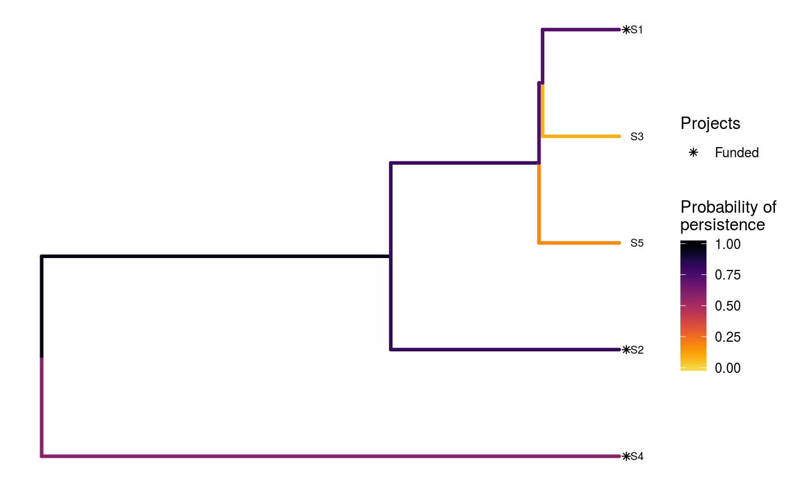
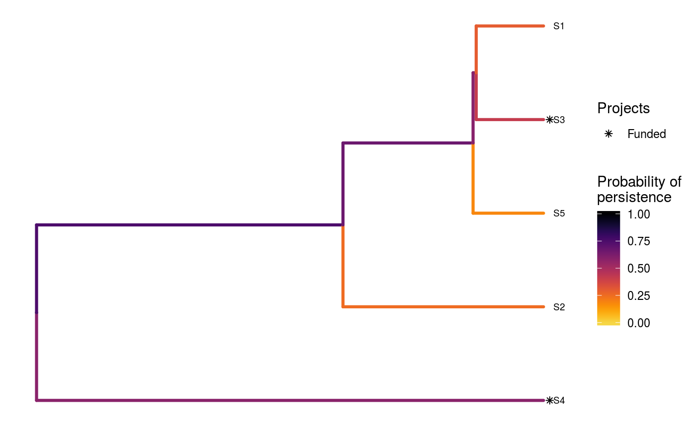
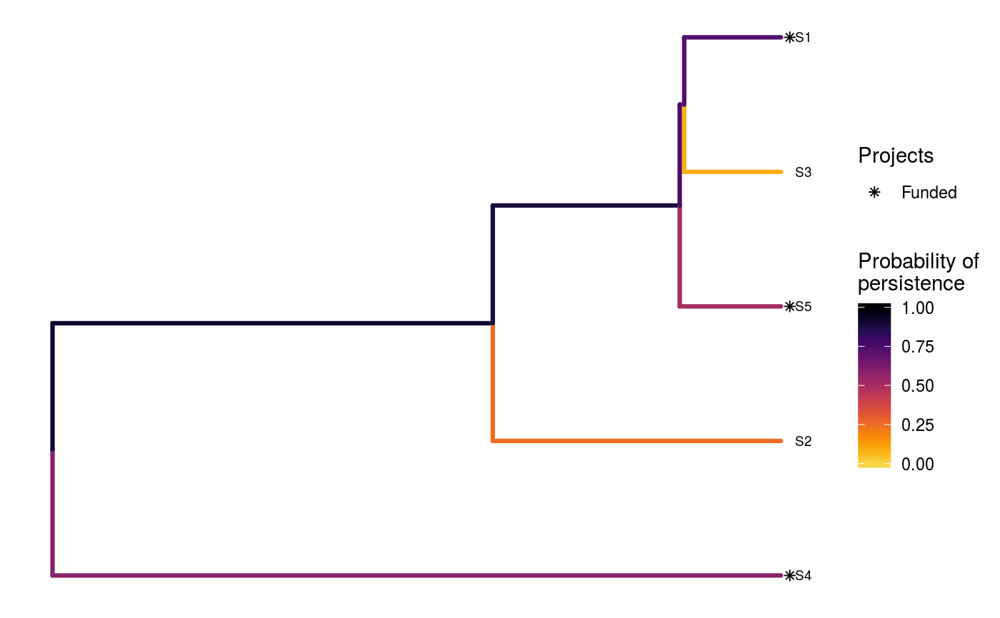

R/ppp_heuristic_phylo_solution.R
ppp_heuristic_phylo_solution.RdPrioritize funding for conservation projects using the 'Project Prioritization Protocol' (Joseph, Maloney & Possingham 2009) with phylogenetic data and using a stingy heuristic algorithm (Bennett et al. 2014). Although this algorithm can deliver solutions that perform better than random, it is extremely unlikely to identify solutions that are optimal (Underhill 1994; Rodrigues & Gaston 2002).
ppp_heuristic_phylo_solution(x, y, tree, budget, project_column_name, success_column_name, action_column_name, cost_column_name, locked_in_column_name = NULL, locked_out_column_name = NULL, number_solutions = 1L)
| x |
|
|---|---|
| y |
|
| tree |
|
| budget |
|
| project_column_name |
|
| success_column_name |
|
| action_column_name |
|
| cost_column_name |
|
| locked_in_column_name |
|
| locked_out_column_name |
|
| number_solutions |
|
A tibble object containing the
solution(s) data. Each row corresponds to a different solution, and
each column describes a different property of the solution. The object
contains a column for each project (based on the argument to
project_column_name) which contains logical values indicating
if the project was prioritized for funded (TRUE) or not
(FALSE) in a given solution. Additionally, the object also contains
the following columns:
"solution"integer solution identifier.
"method"character name of method used to produce the
solution(s).)
"budget"numeric budget used for generating each of
the of the solution(s).
"obj"numeric objective value. If phylogenetic data
were input, then this column contains the expected phylogenetic
diversity (Faith 2008) associated with each of the solutions.
Otherwise, this column contains the expected weighted species richness
(i.e. the sum of the product between the species' persistence
probabilities and their weights.
"cost"numeric total cost associated with each of
of the solution(s).
"optimal"logical indicating if each of the
solution(s) is known to be optimal (TRUE) or not (FALSE).
Missing values (NA) indicate that optimality is unknown
(i.e. because the method used to produce the solution(s) does not
provide any bounds on their quality).
This algorithm aims to identify a set of conservation projects, each associated with a set of conservation actions, that should be funded to maximize the amount of evolutionary history that is expected to persist into the future. Briefly, this algorithm works by starting off with all conservation actions selected for funding and then begins iteratively defunding (removing) actions until the budget is met (Joseph, Maloney & Possingham 2009; Bennett et al. 2014). In a given iteration, each action is evaluated in terms of the amount of evolutionary history that is expected to be lost per unit cost when the action is not funded (based on the 'expected phylogenetic diversity' metric; Faith 2008), and the action associated with the lowest utility is defunded. Since projects are only considered funded when all of their associated actions are also funded---and species only receive benefits from projects that are funded, and not individual conservation actions---by iteratively removing actions according to their expected utility, this algorithm may identify cost-effective funding schemes. Note, however, that this algorithm is extremely unlikely to identify optimal solutions.
The calculations that underpin this algorithm can be expressed mathematically. To calculate the utility for funding a given action (\(L\)) among a set of actions (\(L\)), let the expected amount of evolutionary history that will persist into the future when all the actions are funded be expressed as \(A(L)\). Also, let the expected amount of evolutionary history that will persist into the future when all the remaining actions are funded except for action \(l\) be expressed as \(A(L - l)\). Furthermore, allow the cost for funding action \(l\) to be \(C_l\). Given this, the relative benefit (or utility) for funding action \(l\) (\(U_l\)) in a given iteration can be expressed as:
$$U_l = \frac{A(L) - A(L - l)}{C_l}$$
To calculate the expected amount of evolutionary history that will persist into the future for a given set of funded actions, we will adopt a new set of definitions to avoid confusion. Let \(I\) represent a given set of funded actions (indexed by \(i\)). For example, \(I\) could denote all of the actions in a given iteration (\(A(L)\)) or all of the actions in a given iteration except for a specific action (\(A(L - l)\)). Next, let \(S\) represent each species (e.g. species; conservation projects (indexed by \(j\)) given the set of funded actions \(I\). Let \(P_j\) represent the probability of project \(j\) being successful if it is funded. To represent the conservation outcome for funding the projects \(J\), let \(B_{js}\) denote the probability of persistence for the species \(s\) if project \(j\) is funded and project \(j\) is used to conserve that species (i.e. it is the best funded funded project for that species).
The probability that each species will go extinct (\(E_s\)) when a given set of projects are funded (\(J\)) can then be expressed as as:
$$E_s = 1 - \mathrm{max}(P_1 \times B_{1s}, \ldots, P_J \times B_{Js})$$
To account for the phylogenetic contributions of funding a project, consider a phylogenetic tree that contains species \(s \in S\) and contains branches with known lengths. To describe the tree using mathematical notation, let \(B\) represent the branches (indexed by \(b\)) with lengths \(L_b\) and let \(T_{bs}\) indicate which species \(s \in S\) are associated with which phylogenetic branches \(b \in B\) (using zeros and ones).
The amount of evolutionary history that is expected to persist when a given set of projects are funded can then be expressed as:
$$A(I) = \sum_{b = 0}^{B} L_b \times \big(1 - \prod_{s = 0}^{S} ifelse(T_{bs} == 1, E_s, 1)\big)$$
Bennett JR, Elliott G, Mellish B, Joseph LN, Tulloch AI, Probert WJ, ... & Maloney R (2014) Balancing phylogenetic diversity and species numbers in conservation prioritization, using a case study of threatened species in New Zealand. Biological Conservation, 174: 47--54.
Faith DP (2008) Threatened species and the potential loss of phylogenetic diversity: conservation scenarios based on estimated extinction probabilities and phylogenetic risk analysis. Conservation Biology, 22: 1461--1470.
Joseph LN, Maloney RF, & Possingham HP (2009) Optimal allocation of resources among threatened species: a project prioritization protocol. Conservation biology, 23, 328--338.
Rodrigues AS & Gaston KJ (2002) Optimisation in reserve selection procedures---why not? Biological Conservation, 107: 123-129.
Underhill LG (1994) Optimal and suboptimal reserve selection algorithms. Biological Conservation, 70: 85--87.
For other methods for generating solutions for the 'Project
Prioritization Protocol' problem using phylogenetic data, see
ppp_exact_phylo_solution
ppp_manual_phylo_solution, and
ppp_random_phylo_solution.
To visualize the effectiveness of a particular solution, see
ppp_plot_phylo_solution.
# set seed for reproducibility set.seed(500) # load built-in data data(sim_project_data, sim_action_data, sim_tree) # print simulated project data print(sim_project_data)#> # A tibble: 6 x 13 #> name success S1 S2 S3 S4 S5 S1_action S2_action S3_action #> <chr> <dbl> <dbl> <dbl> <dbl> <dbl> <dbl> <lgl> <lgl> <lgl> #> 1 S1_p~ 0.919 0.791 0 0 0 0 TRUE FALSE FALSE #> 2 S2_p~ 0.923 0 0.888 0 0 0 FALSE TRUE FALSE #> 3 S3_p~ 0.829 0 0 0.502 0 0 FALSE FALSE TRUE #> 4 S4_p~ 0.848 0 0 0 0.690 0 FALSE FALSE FALSE #> 5 S5_p~ 0.814 0 0 0 0 0.617 FALSE FALSE FALSE #> 6 base~ 1 0.298 0.250 0.0865 0.249 0.182 FALSE FALSE FALSE #> # ... with 3 more variables: S4_action <lgl>, S5_action <lgl>, #> # baseline_action <lgl>#> # A tibble: 6 x 4 #> name cost locked_in locked_out #> <chr> <dbl> <lgl> <lgl> #> 1 S1_action 94.4 FALSE FALSE #> 2 S2_action 101. FALSE FALSE #> 3 S3_action 103. TRUE FALSE #> 4 S4_action 99.2 FALSE FALSE #> 5 S5_action 99.9 FALSE TRUE #> 6 baseline_action 0 FALSE FALSE#> #> Phylogenetic tree with 5 tips and 4 internal nodes. #> #> Tip labels: #> [1] "S3" "S1" "S5" "S2" "S4" #> #> Rooted; includes branch lengths.# find a solution that meets a budget of 300 s1 <- ppp_heuristic_phylo_solution(sim_project_data, sim_action_data, sim_tree, 300, "name", "success", "name", "cost") # print solution print(s1)#> # A tibble: 1 x 12 #> solution method obj budget cost optimal S1_action S2_action S3_action #> <int> <chr> <dbl> <dbl> <dbl> <lgl> <lgl> <lgl> <lgl> #> 1 1 heuri~ 2.92 300 295. NA TRUE TRUE FALSE #> # ... with 3 more variables: S4_action <lgl>, S5_action <lgl>, #> # baseline_action <lgl># print the names of which actions were funded print(names(s1)[which(unlist(s1[1, sim_action_data$name]))])#> [1] "solution" "method" "budget" "optimal"# plot solution ppp_plot_phylo_solution(sim_project_data, sim_action_data, sim_tree, s1, "name", "success", "name", "cost")# find a solution that meets a budget of 300 and allocates # funding for the "S1_action" action. For instance, species "S1" might # be an iconic species that has cultural and economic importance. sim_action_data2 <- sim_action_data sim_action_data2$locked_in <- sim_action_data2$name == "S1_action" s2 <- ppp_heuristic_phylo_solution(sim_project_data, sim_action_data2, sim_tree, 300, "name", "success", "name", "cost", locked_in_column_name = "locked_in") # print solution print(s2)#> # A tibble: 1 x 12 #> solution method obj budget cost optimal S1_action S2_action S3_action #> <int> <chr> <dbl> <dbl> <dbl> <lgl> <lgl> <lgl> <lgl> #> 1 1 heuri~ 2.92 300 295. NA TRUE TRUE FALSE #> # ... with 3 more variables: S4_action <lgl>, S5_action <lgl>, #> # baseline_action <lgl># plot solution ppp_plot_phylo_solution(sim_project_data, sim_action_data2, sim_tree, s2, "name", "success", "name", "cost")# find a solution that meets a budget of 300 and does not allocate # funding for the "S2_action" action. For instance, species "S2" # might have very little cultural or economic importance. Broadly speaking, # though, it is better to "lock in" "important" species rather than # "lock out" unimportant species. sim_action_data3 <- sim_action_data sim_action_data3$locked_out <- sim_action_data3$name == "S2_action" s3 <- ppp_heuristic_phylo_solution(sim_project_data, sim_action_data3, sim_tree, 300, "name", "success", "name", "cost", locked_out_column_name = "locked_out") # print solution print(s3)#> # A tibble: 1 x 12 #> solution method obj budget cost optimal S1_action S2_action S3_action #> <int> <chr> <dbl> <dbl> <dbl> <lgl> <lgl> <lgl> <lgl> #> 1 1 heuri~ 2.61 300 294. NA TRUE FALSE FALSE #> # ... with 3 more variables: S4_action <lgl>, S5_action <lgl>, #> # baseline_action <lgl># plot solution ppp_plot_phylo_solution(sim_project_data, sim_action_data3, sim_tree, s3, "name", "success", "name", "cost")# find all solutions from the heuristic algorithm # note we can set the budget higher than the total cost of all the # projects, and the number of solutions to the total number of # projects to achieve this s4 <- ppp_heuristic_phylo_solution(sim_project_data, sim_action_data, sim_tree, sum(sim_action_data$cost) * 1.1, "name", "success", "name", "cost", number_solutions = nrow(sim_action_data)) # print solutions print(s4)#> # A tibble: 6 x 12 #> solution method obj budget cost optimal S1_action S2_action S3_action #> <int> <chr> <dbl> <dbl> <dbl> <lgl> <lgl> <lgl> <lgl> #> 1 1 heuri~ 3.13 548. 498. NA TRUE TRUE TRUE #> 2 2 heuri~ 3.04 548. 395. NA TRUE TRUE FALSE #> 3 3 heuri~ 2.92 548. 295. NA TRUE TRUE FALSE #> 4 4 heuri~ 2.64 548. 200. NA FALSE TRUE FALSE #> 5 5 heuri~ 2.10 548. 101. NA FALSE TRUE FALSE #> 6 6 heuri~ 1.46 548. 0 NA FALSE FALSE FALSE #> # ... with 3 more variables: S4_action <lgl>, S5_action <lgl>, #> # baseline_action <lgl># plot solution cost against expected phylogenetic diversity plot(obj ~ cost, data = s4, main = "Heuristic solutions", xlab = "Cost ($)", ylab = "Expected phylogenetic diversity")